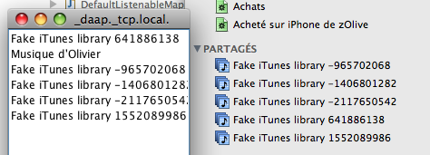

com.ochafik.util.listenable.DefaultListenableMap<String,ServiceInfo>
com.ochafik.util.listenable.ZeroConfListenableMap
com.ochafik.util.listenable.DefaultListenableMap<String,ServiceInfo>
com.ochafik.util.listenable.ZeroConfListenableMap
|
||||||||
| PREV CLASS NEXT CLASS | FRAMES NO FRAMES | |||||||
| SUMMARY: NESTED | FIELD | CONSTR | METHOD | DETAIL: FIELD | CONSTR | METHOD | |||||||
java.lang.Object
public class ZeroConfListenableMap
List of ZeroConf services discovered over the network.

Also provides a singleton read-write listenable list of advertised services that can be used to announce any service on the local network.
Makes use of the JmDNS library, that is compatible with Apple's Rendez-Vous technology (former Bonjour).
The constructor of this class takes a service type string as argument. You can look for existing registered service types on the page DNS SRV (RFC 2782) Service Types.
Examples :
| Nested Class Summary |
|---|
| Nested classes/interfaces inherited from interface java.util.Map |
|---|
Map.Entry<K,V> |
| Constructor Summary | |
|---|---|
ZeroConfListenableMap(String typeString)
|
|
| Method Summary | |
|---|---|
static ListenableMap<String,ServiceInfo> |
getAdvertisedServiceInfos()
Read-write listenable list of services advertised by this class. |
static JmDNS |
getJmDNS()
Get a singleton JmDNS instance |
static void |
main(String[] args)
|
void |
serviceAdded(ServiceEvent event)
Implementation of the ServiceListener interface |
void |
serviceRemoved(ServiceEvent event)
Implementation of the ServiceListener interface |
void |
serviceResolved(ServiceEvent event)
Implementation of the ServiceListener interface |
void |
unregister()
Stop the listening of services. |
| Methods inherited from class com.ochafik.util.listenable.DefaultListenableMap |
|---|
clear, containsKey, containsValue, entrySet, equals, get, hashCode, isEmpty, keySet, put, putAll, remove, size, toString, values |
| Methods inherited from class java.lang.Object |
|---|
clone, finalize, getClass, notify, notifyAll, wait, wait, wait |
| Constructor Detail |
|---|
public ZeroConfListenableMap(String typeString)
| Method Detail |
|---|
public static ListenableMap<String,ServiceInfo> getAdvertisedServiceInfos()
public void unregister()
public void serviceAdded(ServiceEvent event)
serviceAdded in interface ServiceListenerpublic void serviceRemoved(ServiceEvent event)
serviceRemoved in interface ServiceListenerpublic void serviceResolved(ServiceEvent event)
serviceResolved in interface ServiceListenerpublic static JmDNS getJmDNS()
public static void main(String[] args)
|
||||||||
| PREV CLASS NEXT CLASS | FRAMES NO FRAMES | |||||||
| SUMMARY: NESTED | FIELD | CONSTR | METHOD | DETAIL: FIELD | CONSTR | METHOD | |||||||